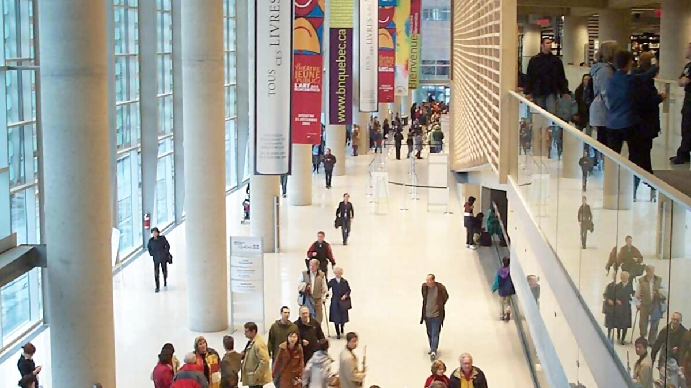

# Load libraries
library(dplyr)
library(ggplot2)
library(readr)
# Download, validate and prepare the official 2024 resource
source("datasets/bibliotheques-quebec/preparation.R")
# Import prepared data
bibliotheques <- read_csv(
"data/processed/bibliotheques-quebec/statistiques_bibliotheques_quebec_2024_selection.csv",
show_col_types = FALSE
)
# Visualise visits per inhabitant
bibliotheques |>
filter(!is.na(visites_par_habitant), population_desservie > 0) |>
ggplot(aes(x = visites_par_habitant)) +
geom_histogram(binwidth = 1, fill = "#325EA8", color = "white") +
labs(
x = "Visites par habitant",
y = "Nombre de bibliothèques",
title = "Distribution des visites par habitant",
subtitle = "Statistiques des bibliothèques publiques du Québec, ressource 2024"
)Statistiques des bibliothèques publiques du Québec
Statistiques des bibliothèques publiques du Québec
Bibliothèque et Archives nationales du Québec / Données Québec
Bibliothèque publique ou centre régional dans la ressource annuelle 2024

TerritoireQuébec
NiveauIntroduction à avancé
StructureTabulaire large, administratif et financier
FormatCSV séparé par point-virgule préparé localement
Question de départ
Construire un portrait régional des visites, prêts et dépenses par habitant.
Potentiel pédagogique28 / 30
importation CSVnettoyage de noms de variablesconversion numériqueratioscomparaison régionalevaleurs manquantesindicateurs administratifs
R en action
Aperçu reproductible
Aperçu calculé par R à partir de data/processed/bibliotheques-quebec/statistiques_bibliotheques_quebec_2024_selection.csv.
Code minimal
library(dplyr)
donnees <- read.csv("data/processed/bibliotheques-quebec/statistiques_bibliotheques_quebec_2024_selection.csv", check.names = FALSE)
glimpse(donnees)
donnees |> summarise(lignes = n(), colonnes = ncol(donnees))
Résultats R
Lignes dans l'aperçu188
Lignes déclarées188 lignes pour la ressource 2024
Colonnes dans le CSV10
Variables num.6
Valeurs manquantes2.4 %
Aperçustatistiques_bibliotheques_quebec_2024_selection.csv
| Acton Vale | 16: Montérégie | 7823 | Publique relevant directement d'une municipalité | Gratuite | 15579 | 29919 | 1142 | 38 | 298101 |
| Alma | 02: Saguenay-Lac-Saint-Jean | 30649 | Publique relevant directement d'une municipalité | Gratuite | 55024 | 153411 | 9732 | 450 | 1166488 |
| Amos | 08: Abitibi-Témiscamingue | 12757 | Publique relevant directement d'une municipalité | Gratuite | 43747 | 62520 | 3962 | 241 | 777472 |
| Amqui | 01: Bas-Saint-Laurent | 6129 | Publique relevant directement d'une municipalité | Gratuite | 32871 | 1625 | 197782 | ||
| Baie-Comeau | 09: Côte-Nord | 20684 | Publique relevant directement d'une municipalité | Gratuite | 89486 | 117044 | 4307 | 237 | 920020 |
| Baie-D'Urfé | 06: Montréal | 3710 | Publique relevant d'une corporation distincte de la municipalité | Gratuite | 18025 | 11666 | 1843 | 38 | 170199 |
| Baie-Saint-Paul | 03: Capitale-Nationale | 7600 | Publique relevant directement d'une municipalité | Gratuite | 21495 | 36748 | 1673 | 7 | 274125 |
| Beaconsfield | 06: Montréal | 19290 | Publique relevant directement d'une municipalité | Gratuite | 491490 | 191843 | 5213 | 275 | 1525385 |
| Beauceville | 12: Chaudière-Appalaches | 6285 | Publique relevant directement d'une municipalité | Gratuite | 3200 | 25662 | 828 | 29 | 194679 |
| Beauharnois | 16: Montérégie | 14745 | Publique relevant directement d'une municipalité | Gratuite | 25233 | 62520 | 2742 | 31 | 821699 |
| Bécancour | 17: Centre-du-Québec | 14438 | Publique relevant directement d'une municipalité | Gratuite | 43756 | 130490 | 3652 | 32 | 667463 |
| Beloeil | 16: Montérégie | 24775 | Publique relevant directement d'une municipalité | Gratuite | 58705 | 181374 | 20507 | 242 | 1365268 |
| Blainville | 15: Laurentides | 61114 | Publique relevant directement d'une municipalité | Gratuite | 319097 | 492164 | 41947 | 451 | 2997483 |
| Boisbriand | 15: Laurentides | 29229 | Publique relevant directement d'une municipalité | Gratuite | 110276 | 163853 | 8468 | 214 | 1535163 |
| Bois-des-Filion | 15: Laurentides | 10602 | Publique relevant directement d'une municipalité | Gratuite | 40149 | 75810 | 3924 | 90 | 1026793 |
| Boucherville | 16: Montérégie | 41726 | Publique relevant directement d'une municipalité | Gratuite | 200545 | 462481 | 13564 | 250 | 2929790 |
| Bromont | 16: Montérégie | 11834 | Publique relevant directement d'une municipalité | Gratuite | 11749 | 75362 | 4708 | 218 | 499221 |
| Brossard | 16: Montérégie | 95066 | Publique relevant directement d'une municipalité | Gratuite | 728889 | 506639 | 35105 | 809 | 5222227 |
| Brownsburg-Chatham | 15: Laurentides | 7764 | Publique relevant directement d'une municipalité | Gratuite | 9798 | 22021 | 1048 | 39 | 329413 |
| Candiac | 16: Montérégie | 24097 | Publique relevant directement d'une municipalité | Gratuite | 75336 | 208752 | 11993 | 81 | 1109441 |
| Cantley | 07: Outaouais | 12001 | Publique relevant directement d'une municipalité | Gratuite | 22677 | 42702 | 2758 | 25 | 291301 |
| Chambly | 16: Montérégie | 31692 | Publique relevant directement d'une municipalité | Gratuite | 59080 | 266939 | 15894 | 146 | 2983231 |
| Chandler | 11: Gaspésie-Iles-de-la-Madeleine | 7419 | Publique relevant directement d'une municipalité | Gratuite | 5526 | 318 | 33618 | ||
| Charlemagne | 14: Lanaudière | 6495 | Publique relevant directement d'une municipalité | Gratuite | 16663 | 22779 | 1566 | 86 | 373831 |
| Châteauguay | 16: Montérégie | 52320 | Publique relevant directement d'une municipalité | Gratuite | 148326 | 194970 | 12189 | 244 | 2214385 |
| Chelsea | 07: Outaouais | 8825 | Publique relevant directement d'une municipalité | Gratuite | 19916 | 75392 | 6777 | 82 | 317198 |
| Chertsey | 14: Lanaudière | 5478 | Publique relevant directement d'une municipalité | Gratuite | 27937 | 24900 | 1288 | 28 | 227648 |
| Chibougamau | 10: Nord-du-Québec | 7321 | Publique relevant directement d'une municipalité | Gratuite | 10985 | 17241 | 1429 | 11 | 397619 |
| Coaticook | 05: Estrie | 8893 | Publique relevant d'une corporation distincte de la municipalité | Gratuite | 21685 | 38181 | 2228 | 261 | 368370 |
| Contrecoeur | 16: Montérégie | 10194 | Publique relevant directement d'une municipalité | Gratuite | 19665 | 69498 | 2726 | 54 | 363685 |
| Coteau-du-Lac | 16: Montérégie | 7681 | Publique relevant directement d'une municipalité | Gratuite | 85947 | 56462 | 1679 | 30 | 398454 |
| Côte-Saint-Luc | 06: Montréal | 37833 | Publique relevant directement d'une municipalité | Gratuite | 322456 | 257599 | 9454 | 441 | 3879090 |
| Cowansville | 16: Montérégie | 18382 | Publique relevant directement d'une municipalité | Gratuite | 41843 | 120113 | 7470 | 312 | 936916 |
| Delson | 16: Montérégie | 8557 | Publique relevant directement d'une municipalité | Gratuite | 19200 | 39845 | 1846 | 108 | 350771 |
| Deux-Montagnes | 15: Laurentides | 18347 | Publique relevant directement d'une municipalité | Gratuite | 107639 | 84390 | 5950 | 160 | 1281157 |
| Dolbeau-Mistassini | 02: Saguenay-Lac-Saint-Jean | 13717 | Publique relevant directement d'une municipalité | Gratuite | 21752 | 76923 | 2245 | 25 | 538498 |
| Dollard-des-Ormeaux | 06: Montréal | 50171 | Publique relevant directement d'une municipalité | Gratuite | 319271 | 289170 | 11164 | 519 | 4097761 |
| Donnacona | 03: Capitale-Nationale | 7653 | Publique relevant directement d'une municipalité | Gratuite | 9490 | 29635 | 3107 | 39 | 219017 |
| Dorval | 06: Montréal | 20382 | Publique relevant directement d'une municipalité | Gratuite | 482188 | 159041 | 8836 | 264 | 2426242 |
| Drummondville | 17: Centre-du-Québec | 82790 | Publique relevant directement d'une municipalité | Gratuite | 990276 | 631009 | 50890 | 428 | 3375711 |
| Farnham | 16: Montérégie | 10848 | Publique relevant directement d'une municipalité | Gratuite | 46937 | 2740 | 27 | 284400 | |
| Fermont | 09: Côte-Nord | 2181 | Publique relevant directement d'une municipalité | Gratuite | 3658 | 8717 | 1040 | 59 | 423470 |
| Gatineau | 07: Outaouais | 304787 | Publique relevant directement d'une municipalité | Gratuite | 2458003 | 1711650 | 92657 | 2765 | 13539458 |
| Granby | 16: Montérégie | 88623 | Publique relevant directement d'une municipalité | Gratuite | 458721 | 486108 | 26532 | 855 | 2385427 |
| Joliette | 14: Lanaudière | 38097 | Publique relevant d'une corporation distincte de la municipalité | Gratuite | 1095862 | 252337 | 11418 | 695 | 1857857 |
| Kirkland | 06: Montréal | 38854 | Publique relevant directement d'une municipalité | Gratuite | 131659 | 192058 | 7317 | 998 | 2299206 |
| Lac-Beauport | 03: Capitale-Nationale | 8396 | Publique relevant directement d'une municipalité | Gratuite | 27620 | 52454 | 2278 | 8 | 327096 |
| Lac-Brome | 16: Montérégie | 6984 | Publique relevant d'une corporation distincte de la municipalité | Gratuite | 11215 | 20755 | 1936 | 70 | 296468 |
| Lachute | 15: Laurentides | 18158 | Publique relevant directement d'une municipalité | Gratuite | 78011 | 70451 | 2719 | 225 | 1098413 |
| Lac-Mégantic | 05: Estrie | 6002 | Publique relevant d'une corporation distincte de la municipalité | Gratuite | 71348 | 47846 | 2901 | 65 | 473987 |
| La Malbaie | 03: Capitale-Nationale | 8442 | Publique relevant directement d'une municipalité | Gratuite | 50119 | 54293 | 2340 | 231 | 453213 |
| L'Ancienne-Lorette | 03: Capitale-Nationale | 17406 | Publique relevant directement d'une municipalité | Gratuite | 82466 | 158266 | 8121 | 130 | 942674 |
| La Pêche | 07: Outaouais | 9100 | Publique relevant directement d'une municipalité | Gratuite | 10934 | 22734 | 3770 | 41 | 127974 |
| La Prairie | 16: Montérégie | 27015 | Publique relevant directement d'une municipalité | Gratuite | 63001 | 155124 | 5447 | 258 | 930353 |
| La Sarre | 08: Abitibi-Témiscamingue | 7188 | Publique relevant directement d'une municipalité | Gratuite | 116289 | 53625 | 1305 | 34 | 253207 |
| L'Assomption | 14: Lanaudière | 24502 | Publique relevant directement d'une municipalité | Gratuite | 115097 | 143741 | 5620 | 634 | 1692627 |
| La Tuque | 04: Mauricie | 11893 | Publique relevant directement d'une municipalité | Gratuite | 25170 | 34433 | 1366 | 53 | 436772 |
| Laval | 13: Laval | 450629 | Publique relevant directement d'une municipalité | Gratuite | 3239199 | 2557329 | 59964 | 2159 | 20375191 |
| Lavaltrie | 14: Lanaudière | 15807 | Publique relevant directement d'une municipalité | Gratuite | 8620 | 74597 | 7384 | 312 | 550560 |
| L'Épiphanie | 14: Lanaudière | 9090 | Publique relevant directement d'une municipalité | Gratuite | 17617 | 23808 | 1708 | 82 | 252078 |
| Les Cèdres | 16: Montérégie | 7226 | Publique relevant directement d'une municipalité | Gratuite | 22580 | 36794 | 1485 | 93 | 538921 |
| Les Coteaux | 16: Montérégie | 5938 | Publique relevant directement d'une municipalité | Gratuite | 18184 | 23518 | 876 | 29 | 208801 |
| Les Îles-de-la-Madeleine | 11: Gaspésie-Îles-de-la-Madeleine | 12428 | Publique relevant directement d'une municipalité | Gratuite | 10544 | 23718 | 2583 | 131 | 398558 |
| Lévis | 12: Chaudière-Appalaches | 156225 | Publique relevant directement d'une municipalité | Gratuite | 800058 | 969948 | 38125 | 402 | 6131727 |
| L'Île-Perrot | 16: Montérégie | 11678 | Publique relevant directement d'une municipalité | Gratuite | 39087 | 48374 | 4938 | 244 | 412148 |
| Longueuil | 16: Montérégie | 273776 | Publique relevant directement d'une municipalité | Gratuite | 643260 | 1292276 | 68016 | 1277 | 10711999 |
| Lorraine | 15: Laurentides | 9680 | Publique relevant directement d'une municipalité | Gratuite | 26942 | 71303 | 4877 | 40 | 535290 |
| Louiseville | 04: Mauricie | 7565 | Publique relevant directement d'une municipalité | Gratuite | 12841 | 22782 | 666 | 36 | 204777 |
| Magog | 05: Estrie | 28790 | Publique relevant directement d'une municipalité | Gratuite | 387148 | 230962 | 9225 | 365 | 1618240 |
| Marieville | 16: Montérégie | 11778 | Publique relevant directement d'une municipalité | Gratuite | 41699 | 60240 | 3632 | 74 | 454474 |
| Mascouche | 14: Lanaudière | 54540 | Publique relevant directement d'une municipalité | Gratuite | 125463 | 320393 | 14563 | 160 | 2126165 |
| Matane | 01: Bas-Saint-Laurent | 16954 | Publique relevant directement d'une municipalité | Gratuite | 52306 | 82167 | 2380 | 170 | 809284 |
| McMasterville | 16: Montérégie | 6097 | Publique relevant directement d'une municipalité | Gratuite | 7324 | 26442 | 1585 | 9 | 140994 |
| Mercier | 16: Montérégie | 15371 | Publique relevant directement d'une municipalité | Gratuite | 61375 | 4004 | 71 | 539941 | |
| Mirabel | 15: Laurentides | 64973 | Publique relevant directement d'une municipalité | Gratuite | 208979 | 238915 | 11396 | 110 | 2112773 |
| Mont-Joli | 01: Bas-Saint-Laurent | 7402 | Publique relevant directement d'une municipalité | Gratuite | 19217 | 48365 | 1656 | 99 | 508236 |
| Mont-Laurier | 15: Laurentides | 14521 | Publique relevant directement d'une municipalité | Gratuite | 24880 | 66465 | 2112 | 64 | 714506 |
| Montmagny | 12: Chaudière-Appalaches | 10952 | Publique relevant d'une corporation distincte de la municipalité | Gratuite | 33901 | 47073 | 2461 | 125 | 348450 |
| Montréal | 06: Montréal | 1895211 | Publique relevant directement d'une municipalité | Gratuite | 15064298 | 10830870 | 437258 | 29464 | 131577298 |
| Montréal-Est | 06: Montréal | 4808 | Publique relevant directement d'une municipalité | Gratuite | 26797 | 1204 | 140 | 634049 | |
| Montréal-Ouest | 06: Montréal | 5250 | Publique relevant d'une corporation distincte de la municipalité | Gratuite | 25011 | 27941 | 1954 | 481 | 313496 |
| Mont-Royal | 06: Montréal | 21775 | Publique relevant directement d'une municipalité | Gratuite | 234866 | 317223 | 7537 | 280 | 4439678 |
| Mont-Saint-Hilaire | 16: Montérégie | 28443 | Publique relevant directement d'une municipalité | Gratuite | 129822 | 183433 | 6779 | 221 | 1282876 |
| Mont-Tremblant | 15: Laurentides | 11621 | Publique relevant directement d'une municipalité | Gratuite | 30940 | 92150 | 3046 | 100 | 817990 |
| Nicolet | 17: Centre-du-Québec | 8726 | Publique relevant directement d'une municipalité | Gratuite | 11804 | 31318 | 1557 | 45 | 318866 |
| Notre-Dame-de-l'Île-Perrot | 16: Montérégie | 13628 | Publique relevant directement d'une municipalité | Gratuite | 72566 | 77221 | 4548 | 272 | 540733 |
| Notre-Dame-des-Prairies | 14: Lanaudière | 9528 | Publique relevant d'une corporation distincte de la municipalité | Gratuite | 44621 | 61607 | 2863 | 42 | 546203 |
| Notre-Dame-du-Mont-Carmel | 04: Mauricie | 6400 | Publique relevant directement d'une municipalité | Gratuite | 21625 | 57605 | 2267 | 77 | 340305 |
| Oka | 15: Laurentides | 6059 | Publique relevant directement d'une municipalité | Gratuite | 7999 | 17860 | 1014 | 54 | 196641 |
| Pincourt | 16: Montérégie | 15095 | Publique relevant directement d'une municipalité | Gratuite | 76180 | 7535 | 39 | 457335 | |
| Plessisville | 17: Centre-du-Québec | 8468 | Publique relevant directement d'une municipalité | Gratuite | 56763 | 1811 | 49 | 453292 | |
| Pointe-Calumet | 15: Laurentides | 6257 | Publique relevant directement d'une municipalité | Gratuite | 8284 | 20179 | 889 | 41 | 253674 |
| Pointe-Claire | 06: Montréal | 35429 | Publique relevant directement d'une municipalité | Gratuite | 188423 | 395301 | 18948 | 1883 | 3948998 |
| Pont-Rouge | 03: Capitale-Nationale | 10993 | Publique relevant directement d'une municipalité | Gratuite | 27268 | 84428 | 2026 | 324510 | |
| Port-Cartier | 09: Côte-Nord | 6545 | Publique relevant directement d'une municipalité | Gratuite | 8089 | 34390 | 1384 | 54 | 318407 |
| Prévost | 15: Laurentides | 13957 | Publique relevant directement d'une municipalité | Gratuite | 38950 | 77972 | 6241 | 133 | 470348 |
| Princeville | 17: Centre-du-Québec | 6334 | Publique relevant directement d'une municipalité | Gratuite | 8275 | 26241 | 1276 | 186 | 272920 |
| Québec | 03: Capitale-Nationale | 583336 | Publique relevant directement d'une municipalité | Gratuite | 3912319 | 3389902 | 203355 | 2189 | 23995138 |
| Rawdon | 14: Lanaudière | 12234 | Publique relevant directement d'une municipalité | Gratuite | 27268 | 56999 | 2222 | 105 | 494316 |
| Repentigny | 14: Lanaudière | 87980 | Publique relevant directement d'une municipalité | Gratuite | 487258 | 472828 | 38250 | 944 | 4315150 |
| Richelieu | 16: Montérégie | 5872 | Publique relevant directement d'une municipalité | Gratuite | 10466 | 21330 | 864 | 18 | 174342 |
| Rigaud | 16: Montérégie | 7951 | Publique relevant directement d'une municipalité | Gratuite | 14992 | 42824 | 1290 | 39 | 302885 |
| Rimouski | 01: Bas-Saint-Laurent | 53038 | Publique relevant directement d'une municipalité | Gratuite | 358940 | 428569 | 13050 | 385 | 2070031 |
| Rivière-du-Loup | 01: Bas-Saint-Laurent | 20472 | Publique relevant directement d'une municipalité | Gratuite | 112570 | 159184 | 8197 | 924 | 971743 |
| Roberval | 02: Saguenay-Lac-Saint-Jean | 9887 | Publique relevant directement d'une municipalité | Gratuite | 12548 | 36480 | 943 | 90 | 599001 |
| Rosemère | 15: Laurentides | 14138 | Publique relevant directement d'une municipalité | Gratuite | 79687 | 157366 | 5303 | 197 | 1425837 |
| Rouyn-Noranda | 08: Abitibi-Témiscamingue | 42827 | Publique relevant directement d'une municipalité | Gratuite | 196997 | 140366 | 9384 | 605 | 782761 |
| Saguenay | 02: Saguenay-Lac-Saint-Jean | 148886 | Publique relevant directement d'une municipalité | Gratuite | 451455 | 761037 | 39513 | 653 | 6297255 |
| Saint-Amable | 16: Montérégie | 13796 | Publique relevant directement d'une municipalité | Gratuite | 68849 | 8946 | 83 | 598995 | |
| Saint-Apollinaire | 12: Chaudière-Appalaches | 8689 | Publique relevant directement d'une municipalité | Gratuite | 2879 | 34351 | 1899 | 23 | 258493 |
| Saint-Augustin-de-Desmaures | 03: Capitale-Nationale | 20590 | Publique relevant directement d'une municipalité | Gratuite | 56353 | 133258 | 4710 | 111 | 1106577 |
| Saint-Basile-le-Grand | 16: Montérégie | 17302 | Publique relevant directement d'une municipalité | Gratuite | 52108 | 167082 | 4200 | 83 | 941148 |
| Saint-Bruno-de-Montarville | 16: Montérégie | 26643 | Publique relevant directement d'une municipalité | Gratuite | 122147 | 232581 | 7687 | 403 | 1930048 |
| Saint-Calixte | 14: Lanaudière | 7194 | Publique relevant directement d'une municipalité | Gratuite | 12975 | 38074 | 1298 | 32 | 345495 |
| Saint-Césaire | 16: Montérégie | 6129 | Publique relevant directement d'une municipalité | Gratuite | 3929 | 8761 | 974 | 24 | 178247 |
| Saint-Colomban | 15: Laurentides | 18446 | Publique relevant directement d'une municipalité | Gratuite | 37752 | 158642 | 8292 | 338 | 1062453 |
| Saint-Constant | 16: Montérégie | 31311 | Publique relevant directement d'une municipalité | Gratuite | 119227 | 212734 | 9944 | 174 | 907737 |
| Sainte-Adèle | 15: Laurentides | 14763 | Publique relevant directement d'une municipalité | Gratuite | 37495 | 109964 | 5274 | 93 | 625824 |
| Sainte-Agathe-des-Monts | 15: Laurentides | 11726 | Publique relevant directement d'une municipalité | Gratuite | 102237 | 5773 | 24 | 541720 | |
| Sainte-Anne-de-Bellevue | 06: Montréal | 6396 | Publique relevant directement d'une municipalité | Gratuite | 20487 | 23318 | 1557 | 82 | 392759 |
aperçu limité aux 120 premières lignes lues.
Lecture statistique
Mini-projets
- Construire un portrait régional des visites, prêts et dépenses par habitant.
- Comparer les bibliothèques en distinguant volumes et ratios.
- Discuter les limites d'indicateurs administratifs pour évaluer l'accès aux services.
Activités liées
30-45 minutesLaboratoire - Visites par habitant dans les bibliothèques
Pourquoi les visites totales ne suffisent-elles pas pour comparer des bibliothèques?
2-3 heuresMini-projet - Portrait régional des bibliothèques publiques
Comment construire des indicateurs comparables à partir de données administratives?
Pourquoi ce jeu est intéressant
Ce jeu de données permet d’étudier les bibliothèques publiques québécoises comme un vrai cas de données administratives : fréquentation, prêts, usagers inscrits, population desservie, activités et dépenses de fonctionnement.
Il est utile en science des données parce que le fichier source est large, que les noms de variables sont longs, que les nombres suivent une convention française et que plusieurs conclusions naïves changent dès qu’on rapporte les volumes à la population desservie.
Question d’analyse : quelles différences observe-t-on entre bibliothèques ou régions quand on compare les visites, les prêts et les dépenses par habitant plutôt que les volumes bruts?
Ce qui a été vérifié
| Élément | Résultat vérifié |
|---|---|
| Paquet CKAN | 231a38a8-f28e-4bef-82ea-dc98a14c1b6f |
| Source officielle | Données Québec / Bibliothèque et Archives nationales du Québec |
| Ressources dans le paquet | 19 ressources |
| Ressource préparée ici | statistiques_bibliotheques_quebec_2024.csv |
| Dictionnaire disponible | dictionnaire-des-donnees.csv |
| Licence | Attribution (CC-BY 4.0), selon les métadonnées CKAN consultées le 2026-06-21 |
| Dernière modification du paquet CKAN | 2025-10-10 |
| Dernière modification du CSV 2024 | 2025-10-06 |
| Table préparée | data/processed/bibliotheques-quebec/statistiques_bibliotheques_quebec_2024_selection.csv |
| Résumés préparés | ressources, régions, catégories, valeurs manquantes, bibliothèques avec le plus de visites par habitant |
Source et conditions
| Champ | Information |
|---|---|
| Page Données Québec | https://www.donneesquebec.ca/recherche/dataset/statistiques_des_bibliotheques_publiques_du_quebec |
| API CKAN | https://www.donneesquebec.ca/recherche/api/3/action/package_show?id=statistiques_des_bibliotheques_publiques_du_quebec |
| CSV 2024 | https://www.donneesquebec.ca/recherche/dataset/231a38a8-f28e-4bef-82ea-dc98a14c1b6f/resource/01183d3e-c79c-4d09-915c-f35ffe4dfda8/download/statistiques_bibliotheques_quebec_2024.csv |
| Dictionnaire CSV | https://www.donneesquebec.ca/recherche/dataset/231a38a8-f28e-4bef-82ea-dc98a14c1b6f/resource/25bddc87-e71a-4668-bb37-55b30003dd55/download/dictionnaire-des-donnees.csv |
| Couverture temporelle | Ressources annuelles de 2007 à 2024 |
| Territoire | Québec |
| Date d’accès | 2026-06-21 |
La fiche officielle indique que les données proviennent de l’Enquête annuelle sur les bibliothèques publiques du Québec et qu’elles sont déclarées par les responsables des bibliothèques. Le fichier contient aussi des indicateurs de performance ajoutés à partir des variables déclarées.
Ce que représente une ligne
Une ligne représente une bibliothèque publique ou un centre régional dans la ressource annuelle 2024.
Une ligne n’est pas une personne, une succursale nécessairement comparable à toutes les autres, ni une mesure directe de la qualité du service. Les comparaisons doivent tenir compte de la population desservie et des pratiques de déclaration.
Variables principales
| Variable préparée | Rôle | Point de vigilance |
|---|---|---|
bibliotheque |
Nom de la bibliothèque ou du centre régional | Identifiant lisible, pas une clé statistique parfaite |
region_administrative |
Région administrative publiée | Une ligne sans région, soit Bibliothèque et Archives nationales du Québec |
population_desservie |
Population associée au service | Dénominateur des ratios; une ligne sans population |
categorie_bibliotheque |
Type institutionnel publié | 11 valeurs manquantes |
modalites_abonnement |
Modalités d’abonnement publiées | 11 valeurs manquantes |
visites_total |
Nombre total de visites | Volume à rapporter à la population pour comparer |
prets_total |
Nombre total de prêts | Volume de service, sensible à la taille de la population |
usagers_inscrits_total |
Nombre d’usagers inscrits | Peut être transformé en proportion par habitant |
activites_total |
Nombre total d’activités | 4 valeurs manquantes |
depenses_fonctionnement_total |
Dépenses de fonctionnement déclarées | Comparaison prudente requise |
visites_par_habitant |
Ratio préparé | Calculé seulement si la population est disponible et positive |
prets_par_habitant |
Ratio préparé | Même règle de dénominateur |
depenses_par_habitant |
Ratio préparé | Dépend des dépenses déclarées et de la population desservie |
RÉSULTATS R
Les résultats ci-dessous proviennent de preparation.R, exécuté sur la ressource CSV 2024 téléchargée le 2026-06-21.
| Indicateur | Valeur |
|---|---|
| Ressources CKAN documentées | 19 |
| Lignes dans le CSV source | 188 |
| Colonnes dans le CSV source | 262 |
| Lignes préparées | 188 |
| Colonnes préparées | 16 |
| Régions administratives non manquantes | 19 |
| Catégories de bibliothèques non manquantes | 5 |
| Population desservie totale | 8 608 933 |
| Visites déclarées | 59 981 972 |
| Prêts déclarés | 52 513 445 |
| Usagers inscrits déclarés | 2 792 172 |
| Activités déclarées | 88 196 |
| Dépenses de fonctionnement déclarées | 469 770 944,24 $ |
| Médiane des visites par habitant | 2,81 |
| Médiane des prêts par habitant | 5,11 |
| Médiane des usagers inscrits par habitant | 0,25 |
| Médiane des dépenses par habitant | 42,39 $ |
Régions avec le plus de visites par habitant
| Région administrative | Bibliothèques | Population | Visites | Prêts | Visites par habitant | Prêts par habitant | Dépenses par habitant |
|---|---|---|---|---|---|---|---|
| 06: Montréal | 13 | 2 159 202 | 18 158 853 | 12 993 573 | 8,41 | 6,02 | 73,81 $ |
| 13: Laval | 1 | 450 629 | 3 239 199 | 2 557 329 | 7,19 | 5,68 | 45,22 $ |
| 17: Centre-du-Québec | 7 | 179 363 | 1 230 168 | 1 275 232 | 6,86 | 7,11 | 43,81 $ |
| 07: Outaouais | 6 | 403 979 | 2 611 747 | 2 022 751 | 6,47 | 5,01 | 39,75 $ |
| 03: Capitale-Nationale | 13 | 713 454 | 4 277 230 | 4 109 361 | 6,00 | 5,76 | 40,18 $ |
| 14: Lanaudière | 17 | 450 910 | 2 587 030 | 2 429 512 | 5,74 | 5,39 | 44,52 $ |
| 08: Abitibi-Témiscamingue | 5 | 141 932 | 621 872 | 530 174 | 4,38 | 3,74 | 33,52 $ |
| 04: Mauricie | 6 | 423 938 | 1 719 234 | 1 938 726 | 4,06 | 4,57 | 29,66 $ |
Cette comparaison est descriptive. Elle agrège des lignes administratives et ne suffit pas à expliquer les différences régionales.
Bibliothèques avec le plus de visites par habitant
| Bibliothèque | Région | Population | Visites | Visites par habitant | Prêts par habitant | Dépenses par habitant |
|---|---|---|---|---|---|---|
| Westmount | 06: Montréal | 20 093 | 860 679 | 42,83 | 13,47 | 182,46 $ |
| Joliette | 14: Lanaudière | 38 097 | 1 095 862 | 28,77 | 6,62 | 48,77 $ |
| Beaconsfield | 06: Montréal | 19 290 | 491 490 | 25,48 | 9,95 | 79,08 $ |
| Dorval | 06: Montréal | 20 382 | 482 188 | 23,66 | 7,80 | 119,04 $ |
| La Sarre | 08: Abitibi-Témiscamingue | 7 188 | 116 289 | 16,18 | 7,46 | 35,23 $ |
| Magog | 05: Estrie | 28 790 | 387 148 | 13,45 | 8,02 | 56,21 $ |
| Saint-Hyacinthe | 16: Montérégie | 71 005 | 924 826 | 13,02 | 5,94 | 52,98 $ |
| Drummondville | 17: Centre-du-Québec | 82 790 | 990 276 | 11,96 | 7,62 | 40,77 $ |
Ces valeurs élevées doivent être interprétées avec prudence : elles peuvent refléter un service utilisé au-delà de la population résidente, des pratiques locales, une bibliothèque centrale, ou une définition administrative particulière du territoire desservi.
Valeurs manquantes principales
| Variable | Valeurs manquantes | Pourcentage |
|---|---|---|
visites_par_habitant |
18 | 9,57 % |
visites_total |
17 | 9,04 % |
categorie_bibliotheque |
11 | 5,85 % |
modalites_abonnement |
11 | 5,85 % |
activites_total |
4 | 2,13 % |
depenses_par_habitant |
1 | 0,53 % |
region_administrative |
1 | 0,53 % |
population_desservie |
1 | 0,53 % |
prets_par_habitant |
1 | 0,53 % |
usagers_inscrits_par_habitant |
1 | 0,53 % |
La ligne sans population est conservée dans la table préparée, mais exclue automatiquement des ratios par habitant.
Lecture statistique
Une analyse prudente suit cet ordre :
- vérifier l’unité statistique et les champs déclarés;
- distinguer les volumes bruts des ratios;
- calculer les ratios seulement avec un dénominateur valide;
- inspecter les valeurs manquantes avant les graphiques;
- comparer les régions avec des agrégations explicites;
- commenter les valeurs extrêmes comme des observations à documenter, pas comme des erreurs automatiques;
- éviter les conclusions causales sur la qualité des services.
Les données sont excellentes pour enseigner la statistique descriptive, la préparation de données et la communication prudente d’indicateurs publics.
Concepts enseignables
- importation CSV avec séparateur point-virgule;
- conversion de nombres avec virgule décimale;
- sélection de variables dans un fichier large;
- ratios par habitant;
- valeurs manquantes;
- comparaison régionale;
- visualisation de distributions asymétriques;
- limites des données administratives.
Score zéro déchet
| Dimension | Score | Justification |
|---|---|---|
| Contexte québécois | 3 | Source officielle sur les bibliothèques publiques du Québec |
| Accessibilité pédagogique | 3 | Sujet concret et interprétable par les étudiantes et étudiants |
| Qualité documentaire | 3 | Page Données Québec, API CKAN et dictionnaire CSV |
| Potentiel de nettoyage | 3 | Fichier large, noms longs, nombres français et valeurs manquantes |
| Potentiel de visualisation | 3 | Histogrammes, barres régionales, nuages de points |
| Potentiel de statistique descriptive | 3 | Volumes, ratios, médianes et comparaisons |
| Potentiel d’inférence | 2 | Possible avec prudence, sans plan d’échantillonnage |
| Potentiel de modélisation | 2 | Modèles exploratoires utiles, mais causalité non justifiée |
| Potentiel éthique | 3 | Discussion sur l’accès aux services publics et les indicateurs |
| Réutilisabilité | 3 | Utile en importation, EDA, communication et introduction à la modélisation |
Total : 28 sur 30.
Activité courte
En 30 à 45 minutes, calculer les visites par habitant, visualiser leur distribution et commenter deux limites de comparaison.
Activité longue
En 2 à 3 heures, produire un portrait régional des bibliothèques publiques à partir des ratios de visites, prêts et dépenses par habitant.
Code R minimal
À exécuter depuis la racine du projet.
Résultat visible
Sortie calculée par R à partir de data/processed/bibliotheques-quebec/statistiques_bibliotheques_quebec_2024_selection.csv. Les exemples qui téléchargent une source externe restent non évalués pendant le rendu du site afin de garder les fiches stables.
Lignes dans l'aperçu188
Lignes déclarées188 lignes pour la ressource 2024
Colonnes dans le CSV10
Variables num.6
Valeurs manquantes2.4 %
Aperçustatistiques_bibliotheques_quebec_2024_selection.csv
| Acton Vale | 16: Montérégie | 7823 | Publique relevant directement d'une municipalité | Gratuite | 15579 | 29919 | 1142 | 38 | 298101 |
| Alma | 02: Saguenay-Lac-Saint-Jean | 30649 | Publique relevant directement d'une municipalité | Gratuite | 55024 | 153411 | 9732 | 450 | 1166488 |
| Amos | 08: Abitibi-Témiscamingue | 12757 | Publique relevant directement d'une municipalité | Gratuite | 43747 | 62520 | 3962 | 241 | 777472 |
| Amqui | 01: Bas-Saint-Laurent | 6129 | Publique relevant directement d'une municipalité | Gratuite | 32871 | 1625 | 197782 | ||
| Baie-Comeau | 09: Côte-Nord | 20684 | Publique relevant directement d'une municipalité | Gratuite | 89486 | 117044 | 4307 | 237 | 920020 |
| Baie-D'Urfé | 06: Montréal | 3710 | Publique relevant d'une corporation distincte de la municipalité | Gratuite | 18025 | 11666 | 1843 | 38 | 170199 |
| Baie-Saint-Paul | 03: Capitale-Nationale | 7600 | Publique relevant directement d'une municipalité | Gratuite | 21495 | 36748 | 1673 | 7 | 274125 |
| Beaconsfield | 06: Montréal | 19290 | Publique relevant directement d'une municipalité | Gratuite | 491490 | 191843 | 5213 | 275 | 1525385 |
| Beauceville | 12: Chaudière-Appalaches | 6285 | Publique relevant directement d'une municipalité | Gratuite | 3200 | 25662 | 828 | 29 | 194679 |
| Beauharnois | 16: Montérégie | 14745 | Publique relevant directement d'une municipalité | Gratuite | 25233 | 62520 | 2742 | 31 | 821699 |
| Bécancour | 17: Centre-du-Québec | 14438 | Publique relevant directement d'une municipalité | Gratuite | 43756 | 130490 | 3652 | 32 | 667463 |
| Beloeil | 16: Montérégie | 24775 | Publique relevant directement d'une municipalité | Gratuite | 58705 | 181374 | 20507 | 242 | 1365268 |
| Blainville | 15: Laurentides | 61114 | Publique relevant directement d'une municipalité | Gratuite | 319097 | 492164 | 41947 | 451 | 2997483 |
| Boisbriand | 15: Laurentides | 29229 | Publique relevant directement d'une municipalité | Gratuite | 110276 | 163853 | 8468 | 214 | 1535163 |
| Bois-des-Filion | 15: Laurentides | 10602 | Publique relevant directement d'une municipalité | Gratuite | 40149 | 75810 | 3924 | 90 | 1026793 |
| Boucherville | 16: Montérégie | 41726 | Publique relevant directement d'une municipalité | Gratuite | 200545 | 462481 | 13564 | 250 | 2929790 |
| Bromont | 16: Montérégie | 11834 | Publique relevant directement d'une municipalité | Gratuite | 11749 | 75362 | 4708 | 218 | 499221 |
| Brossard | 16: Montérégie | 95066 | Publique relevant directement d'une municipalité | Gratuite | 728889 | 506639 | 35105 | 809 | 5222227 |
| Brownsburg-Chatham | 15: Laurentides | 7764 | Publique relevant directement d'une municipalité | Gratuite | 9798 | 22021 | 1048 | 39 | 329413 |
| Candiac | 16: Montérégie | 24097 | Publique relevant directement d'une municipalité | Gratuite | 75336 | 208752 | 11993 | 81 | 1109441 |
| Cantley | 07: Outaouais | 12001 | Publique relevant directement d'une municipalité | Gratuite | 22677 | 42702 | 2758 | 25 | 291301 |
| Chambly | 16: Montérégie | 31692 | Publique relevant directement d'une municipalité | Gratuite | 59080 | 266939 | 15894 | 146 | 2983231 |
| Chandler | 11: Gaspésie-Iles-de-la-Madeleine | 7419 | Publique relevant directement d'une municipalité | Gratuite | 5526 | 318 | 33618 | ||
| Charlemagne | 14: Lanaudière | 6495 | Publique relevant directement d'une municipalité | Gratuite | 16663 | 22779 | 1566 | 86 | 373831 |
| Châteauguay | 16: Montérégie | 52320 | Publique relevant directement d'une municipalité | Gratuite | 148326 | 194970 | 12189 | 244 | 2214385 |
| Chelsea | 07: Outaouais | 8825 | Publique relevant directement d'une municipalité | Gratuite | 19916 | 75392 | 6777 | 82 | 317198 |
| Chertsey | 14: Lanaudière | 5478 | Publique relevant directement d'une municipalité | Gratuite | 27937 | 24900 | 1288 | 28 | 227648 |
| Chibougamau | 10: Nord-du-Québec | 7321 | Publique relevant directement d'une municipalité | Gratuite | 10985 | 17241 | 1429 | 11 | 397619 |
| Coaticook | 05: Estrie | 8893 | Publique relevant d'une corporation distincte de la municipalité | Gratuite | 21685 | 38181 | 2228 | 261 | 368370 |
| Contrecoeur | 16: Montérégie | 10194 | Publique relevant directement d'une municipalité | Gratuite | 19665 | 69498 | 2726 | 54 | 363685 |
| Coteau-du-Lac | 16: Montérégie | 7681 | Publique relevant directement d'une municipalité | Gratuite | 85947 | 56462 | 1679 | 30 | 398454 |
| Côte-Saint-Luc | 06: Montréal | 37833 | Publique relevant directement d'une municipalité | Gratuite | 322456 | 257599 | 9454 | 441 | 3879090 |
| Cowansville | 16: Montérégie | 18382 | Publique relevant directement d'une municipalité | Gratuite | 41843 | 120113 | 7470 | 312 | 936916 |
| Delson | 16: Montérégie | 8557 | Publique relevant directement d'une municipalité | Gratuite | 19200 | 39845 | 1846 | 108 | 350771 |
| Deux-Montagnes | 15: Laurentides | 18347 | Publique relevant directement d'une municipalité | Gratuite | 107639 | 84390 | 5950 | 160 | 1281157 |
| Dolbeau-Mistassini | 02: Saguenay-Lac-Saint-Jean | 13717 | Publique relevant directement d'une municipalité | Gratuite | 21752 | 76923 | 2245 | 25 | 538498 |
| Dollard-des-Ormeaux | 06: Montréal | 50171 | Publique relevant directement d'une municipalité | Gratuite | 319271 | 289170 | 11164 | 519 | 4097761 |
| Donnacona | 03: Capitale-Nationale | 7653 | Publique relevant directement d'une municipalité | Gratuite | 9490 | 29635 | 3107 | 39 | 219017 |
| Dorval | 06: Montréal | 20382 | Publique relevant directement d'une municipalité | Gratuite | 482188 | 159041 | 8836 | 264 | 2426242 |
| Drummondville | 17: Centre-du-Québec | 82790 | Publique relevant directement d'une municipalité | Gratuite | 990276 | 631009 | 50890 | 428 | 3375711 |
| Farnham | 16: Montérégie | 10848 | Publique relevant directement d'une municipalité | Gratuite | 46937 | 2740 | 27 | 284400 | |
| Fermont | 09: Côte-Nord | 2181 | Publique relevant directement d'une municipalité | Gratuite | 3658 | 8717 | 1040 | 59 | 423470 |
| Gatineau | 07: Outaouais | 304787 | Publique relevant directement d'une municipalité | Gratuite | 2458003 | 1711650 | 92657 | 2765 | 13539458 |
| Granby | 16: Montérégie | 88623 | Publique relevant directement d'une municipalité | Gratuite | 458721 | 486108 | 26532 | 855 | 2385427 |
| Joliette | 14: Lanaudière | 38097 | Publique relevant d'une corporation distincte de la municipalité | Gratuite | 1095862 | 252337 | 11418 | 695 | 1857857 |
| Kirkland | 06: Montréal | 38854 | Publique relevant directement d'une municipalité | Gratuite | 131659 | 192058 | 7317 | 998 | 2299206 |
| Lac-Beauport | 03: Capitale-Nationale | 8396 | Publique relevant directement d'une municipalité | Gratuite | 27620 | 52454 | 2278 | 8 | 327096 |
| Lac-Brome | 16: Montérégie | 6984 | Publique relevant d'une corporation distincte de la municipalité | Gratuite | 11215 | 20755 | 1936 | 70 | 296468 |
| Lachute | 15: Laurentides | 18158 | Publique relevant directement d'une municipalité | Gratuite | 78011 | 70451 | 2719 | 225 | 1098413 |
| Lac-Mégantic | 05: Estrie | 6002 | Publique relevant d'une corporation distincte de la municipalité | Gratuite | 71348 | 47846 | 2901 | 65 | 473987 |
| La Malbaie | 03: Capitale-Nationale | 8442 | Publique relevant directement d'une municipalité | Gratuite | 50119 | 54293 | 2340 | 231 | 453213 |
| L'Ancienne-Lorette | 03: Capitale-Nationale | 17406 | Publique relevant directement d'une municipalité | Gratuite | 82466 | 158266 | 8121 | 130 | 942674 |
| La Pêche | 07: Outaouais | 9100 | Publique relevant directement d'une municipalité | Gratuite | 10934 | 22734 | 3770 | 41 | 127974 |
| La Prairie | 16: Montérégie | 27015 | Publique relevant directement d'une municipalité | Gratuite | 63001 | 155124 | 5447 | 258 | 930353 |
| La Sarre | 08: Abitibi-Témiscamingue | 7188 | Publique relevant directement d'une municipalité | Gratuite | 116289 | 53625 | 1305 | 34 | 253207 |
| L'Assomption | 14: Lanaudière | 24502 | Publique relevant directement d'une municipalité | Gratuite | 115097 | 143741 | 5620 | 634 | 1692627 |
| La Tuque | 04: Mauricie | 11893 | Publique relevant directement d'une municipalité | Gratuite | 25170 | 34433 | 1366 | 53 | 436772 |
| Laval | 13: Laval | 450629 | Publique relevant directement d'une municipalité | Gratuite | 3239199 | 2557329 | 59964 | 2159 | 20375191 |
| Lavaltrie | 14: Lanaudière | 15807 | Publique relevant directement d'une municipalité | Gratuite | 8620 | 74597 | 7384 | 312 | 550560 |
| L'Épiphanie | 14: Lanaudière | 9090 | Publique relevant directement d'une municipalité | Gratuite | 17617 | 23808 | 1708 | 82 | 252078 |
| Les Cèdres | 16: Montérégie | 7226 | Publique relevant directement d'une municipalité | Gratuite | 22580 | 36794 | 1485 | 93 | 538921 |
| Les Coteaux | 16: Montérégie | 5938 | Publique relevant directement d'une municipalité | Gratuite | 18184 | 23518 | 876 | 29 | 208801 |
| Les Îles-de-la-Madeleine | 11: Gaspésie-Îles-de-la-Madeleine | 12428 | Publique relevant directement d'une municipalité | Gratuite | 10544 | 23718 | 2583 | 131 | 398558 |
| Lévis | 12: Chaudière-Appalaches | 156225 | Publique relevant directement d'une municipalité | Gratuite | 800058 | 969948 | 38125 | 402 | 6131727 |
| L'Île-Perrot | 16: Montérégie | 11678 | Publique relevant directement d'une municipalité | Gratuite | 39087 | 48374 | 4938 | 244 | 412148 |
| Longueuil | 16: Montérégie | 273776 | Publique relevant directement d'une municipalité | Gratuite | 643260 | 1292276 | 68016 | 1277 | 10711999 |
| Lorraine | 15: Laurentides | 9680 | Publique relevant directement d'une municipalité | Gratuite | 26942 | 71303 | 4877 | 40 | 535290 |
| Louiseville | 04: Mauricie | 7565 | Publique relevant directement d'une municipalité | Gratuite | 12841 | 22782 | 666 | 36 | 204777 |
| Magog | 05: Estrie | 28790 | Publique relevant directement d'une municipalité | Gratuite | 387148 | 230962 | 9225 | 365 | 1618240 |
| Marieville | 16: Montérégie | 11778 | Publique relevant directement d'une municipalité | Gratuite | 41699 | 60240 | 3632 | 74 | 454474 |
| Mascouche | 14: Lanaudière | 54540 | Publique relevant directement d'une municipalité | Gratuite | 125463 | 320393 | 14563 | 160 | 2126165 |
| Matane | 01: Bas-Saint-Laurent | 16954 | Publique relevant directement d'une municipalité | Gratuite | 52306 | 82167 | 2380 | 170 | 809284 |
| McMasterville | 16: Montérégie | 6097 | Publique relevant directement d'une municipalité | Gratuite | 7324 | 26442 | 1585 | 9 | 140994 |
| Mercier | 16: Montérégie | 15371 | Publique relevant directement d'une municipalité | Gratuite | 61375 | 4004 | 71 | 539941 | |
| Mirabel | 15: Laurentides | 64973 | Publique relevant directement d'une municipalité | Gratuite | 208979 | 238915 | 11396 | 110 | 2112773 |
| Mont-Joli | 01: Bas-Saint-Laurent | 7402 | Publique relevant directement d'une municipalité | Gratuite | 19217 | 48365 | 1656 | 99 | 508236 |
| Mont-Laurier | 15: Laurentides | 14521 | Publique relevant directement d'une municipalité | Gratuite | 24880 | 66465 | 2112 | 64 | 714506 |
| Montmagny | 12: Chaudière-Appalaches | 10952 | Publique relevant d'une corporation distincte de la municipalité | Gratuite | 33901 | 47073 | 2461 | 125 | 348450 |
| Montréal | 06: Montréal | 1895211 | Publique relevant directement d'une municipalité | Gratuite | 15064298 | 10830870 | 437258 | 29464 | 131577298 |
| Montréal-Est | 06: Montréal | 4808 | Publique relevant directement d'une municipalité | Gratuite | 26797 | 1204 | 140 | 634049 | |
| Montréal-Ouest | 06: Montréal | 5250 | Publique relevant d'une corporation distincte de la municipalité | Gratuite | 25011 | 27941 | 1954 | 481 | 313496 |
| Mont-Royal | 06: Montréal | 21775 | Publique relevant directement d'une municipalité | Gratuite | 234866 | 317223 | 7537 | 280 | 4439678 |
| Mont-Saint-Hilaire | 16: Montérégie | 28443 | Publique relevant directement d'une municipalité | Gratuite | 129822 | 183433 | 6779 | 221 | 1282876 |
| Mont-Tremblant | 15: Laurentides | 11621 | Publique relevant directement d'une municipalité | Gratuite | 30940 | 92150 | 3046 | 100 | 817990 |
| Nicolet | 17: Centre-du-Québec | 8726 | Publique relevant directement d'une municipalité | Gratuite | 11804 | 31318 | 1557 | 45 | 318866 |
| Notre-Dame-de-l'Île-Perrot | 16: Montérégie | 13628 | Publique relevant directement d'une municipalité | Gratuite | 72566 | 77221 | 4548 | 272 | 540733 |
| Notre-Dame-des-Prairies | 14: Lanaudière | 9528 | Publique relevant d'une corporation distincte de la municipalité | Gratuite | 44621 | 61607 | 2863 | 42 | 546203 |
| Notre-Dame-du-Mont-Carmel | 04: Mauricie | 6400 | Publique relevant directement d'une municipalité | Gratuite | 21625 | 57605 | 2267 | 77 | 340305 |
| Oka | 15: Laurentides | 6059 | Publique relevant directement d'une municipalité | Gratuite | 7999 | 17860 | 1014 | 54 | 196641 |
| Pincourt | 16: Montérégie | 15095 | Publique relevant directement d'une municipalité | Gratuite | 76180 | 7535 | 39 | 457335 | |
| Plessisville | 17: Centre-du-Québec | 8468 | Publique relevant directement d'une municipalité | Gratuite | 56763 | 1811 | 49 | 453292 | |
| Pointe-Calumet | 15: Laurentides | 6257 | Publique relevant directement d'une municipalité | Gratuite | 8284 | 20179 | 889 | 41 | 253674 |
| Pointe-Claire | 06: Montréal | 35429 | Publique relevant directement d'une municipalité | Gratuite | 188423 | 395301 | 18948 | 1883 | 3948998 |
| Pont-Rouge | 03: Capitale-Nationale | 10993 | Publique relevant directement d'une municipalité | Gratuite | 27268 | 84428 | 2026 | 324510 | |
| Port-Cartier | 09: Côte-Nord | 6545 | Publique relevant directement d'une municipalité | Gratuite | 8089 | 34390 | 1384 | 54 | 318407 |
| Prévost | 15: Laurentides | 13957 | Publique relevant directement d'une municipalité | Gratuite | 38950 | 77972 | 6241 | 133 | 470348 |
| Princeville | 17: Centre-du-Québec | 6334 | Publique relevant directement d'une municipalité | Gratuite | 8275 | 26241 | 1276 | 186 | 272920 |
| Québec | 03: Capitale-Nationale | 583336 | Publique relevant directement d'une municipalité | Gratuite | 3912319 | 3389902 | 203355 | 2189 | 23995138 |
| Rawdon | 14: Lanaudière | 12234 | Publique relevant directement d'une municipalité | Gratuite | 27268 | 56999 | 2222 | 105 | 494316 |
| Repentigny | 14: Lanaudière | 87980 | Publique relevant directement d'une municipalité | Gratuite | 487258 | 472828 | 38250 | 944 | 4315150 |
| Richelieu | 16: Montérégie | 5872 | Publique relevant directement d'une municipalité | Gratuite | 10466 | 21330 | 864 | 18 | 174342 |
| Rigaud | 16: Montérégie | 7951 | Publique relevant directement d'une municipalité | Gratuite | 14992 | 42824 | 1290 | 39 | 302885 |
| Rimouski | 01: Bas-Saint-Laurent | 53038 | Publique relevant directement d'une municipalité | Gratuite | 358940 | 428569 | 13050 | 385 | 2070031 |
| Rivière-du-Loup | 01: Bas-Saint-Laurent | 20472 | Publique relevant directement d'une municipalité | Gratuite | 112570 | 159184 | 8197 | 924 | 971743 |
| Roberval | 02: Saguenay-Lac-Saint-Jean | 9887 | Publique relevant directement d'une municipalité | Gratuite | 12548 | 36480 | 943 | 90 | 599001 |
| Rosemère | 15: Laurentides | 14138 | Publique relevant directement d'une municipalité | Gratuite | 79687 | 157366 | 5303 | 197 | 1425837 |
| Rouyn-Noranda | 08: Abitibi-Témiscamingue | 42827 | Publique relevant directement d'une municipalité | Gratuite | 196997 | 140366 | 9384 | 605 | 782761 |
| Saguenay | 02: Saguenay-Lac-Saint-Jean | 148886 | Publique relevant directement d'une municipalité | Gratuite | 451455 | 761037 | 39513 | 653 | 6297255 |
| Saint-Amable | 16: Montérégie | 13796 | Publique relevant directement d'une municipalité | Gratuite | 68849 | 8946 | 83 | 598995 | |
| Saint-Apollinaire | 12: Chaudière-Appalaches | 8689 | Publique relevant directement d'une municipalité | Gratuite | 2879 | 34351 | 1899 | 23 | 258493 |
| Saint-Augustin-de-Desmaures | 03: Capitale-Nationale | 20590 | Publique relevant directement d'une municipalité | Gratuite | 56353 | 133258 | 4710 | 111 | 1106577 |
| Saint-Basile-le-Grand | 16: Montérégie | 17302 | Publique relevant directement d'une municipalité | Gratuite | 52108 | 167082 | 4200 | 83 | 941148 |
| Saint-Bruno-de-Montarville | 16: Montérégie | 26643 | Publique relevant directement d'une municipalité | Gratuite | 122147 | 232581 | 7687 | 403 | 1930048 |
| Saint-Calixte | 14: Lanaudière | 7194 | Publique relevant directement d'une municipalité | Gratuite | 12975 | 38074 | 1298 | 32 | 345495 |
| Saint-Césaire | 16: Montérégie | 6129 | Publique relevant directement d'une municipalité | Gratuite | 3929 | 8761 | 974 | 24 | 178247 |
| Saint-Colomban | 15: Laurentides | 18446 | Publique relevant directement d'une municipalité | Gratuite | 37752 | 158642 | 8292 | 338 | 1062453 |
| Saint-Constant | 16: Montérégie | 31311 | Publique relevant directement d'une municipalité | Gratuite | 119227 | 212734 | 9944 | 174 | 907737 |
| Sainte-Adèle | 15: Laurentides | 14763 | Publique relevant directement d'une municipalité | Gratuite | 37495 | 109964 | 5274 | 93 | 625824 |
| Sainte-Agathe-des-Monts | 15: Laurentides | 11726 | Publique relevant directement d'une municipalité | Gratuite | 102237 | 5773 | 24 | 541720 | |
| Sainte-Anne-de-Bellevue | 06: Montréal | 6396 | Publique relevant directement d'une municipalité | Gratuite | 20487 | 23318 | 1557 | 82 | 392759 |
aperçu limité aux 120 premières lignes lues.
Limites et précautions
- Les données sont déclarées dans une enquête administrative; elles ne mesurent pas directement la satisfaction, la qualité du service ou l’accessibilité.
- Une bibliothèque peut servir des personnes qui ne résident pas dans sa population desservie.
- Les visites, les prêts et les dépenses ne doivent pas être comparés sans dénominateur.
- Une ligne, Bibliothèque et Archives nationales du Québec, n’a pas de population desservie ni de région administrative dans la table préparée.
- Les modèles statistiques doivent être présentés comme exploratoires, sauf si un plan d’analyse plus complet est défini.
Extensions
- Comparer les distributions de visites par habitant entre régions.
- Étudier les liens entre prêts par habitant et dépenses par habitant.
- Produire une carte régionale si une géographie officielle est jointe séparément.
- Construire un tableau de bord statique pour une note de service fictive.
- Discuter les effets possibles d’une bibliothèque centrale sur les ratios.
Références utilisées
- Données Québec. 2025. Statistiques des bibliothèques publiques du Québec. https://www.donneesquebec.ca/recherche/dataset/statistiques_des_bibliotheques_publiques_du_quebec
- Données Québec. 2025. API CKAN, paquet
statistiques_des_bibliotheques_publiques_du_quebec. https://www.donneesquebec.ca/recherche/api/3/action/package_show?id=statistiques_des_bibliotheques_publiques_du_quebec - Bibliothèque et Archives nationales du Québec. 2025. Ressource CSV 2024, Statistiques des bibliothèques publiques du Québec. https://www.donneesquebec.ca/recherche/dataset/231a38a8-f28e-4bef-82ea-dc98a14c1b6f/resource/01183d3e-c79c-4d09-915c-f35ffe4dfda8/download/statistiques_bibliotheques_quebec_2024.csv